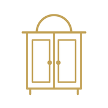

La misma pantalla de Inicio con cada color, y dos gráficos de Cifras. Fondo blanco en las tres, nada de marrón y el dorado del logo como siempre. Los datos son de ejemplo.
Los colores del logo. Pestaña, botones y bordes en negro; los gráficos, en el dorado.
Negro 18,9:1 · dorado de los gráficos 3,1:1 (para gráficos basta 3:1)
TuClosetCentro de controlTodo en blanco y gris; el dorado oscuro solo en la pestaña activa, los botones y los gráficos.
Dorado oscuro 5,0:1, vale también para texto y botonesEl añil de la propuesta colonial (17/10), sobrio y frío, con el dorado solo en el logo.
Añil 9,1:1 · añil de los gráficos 6,4:1